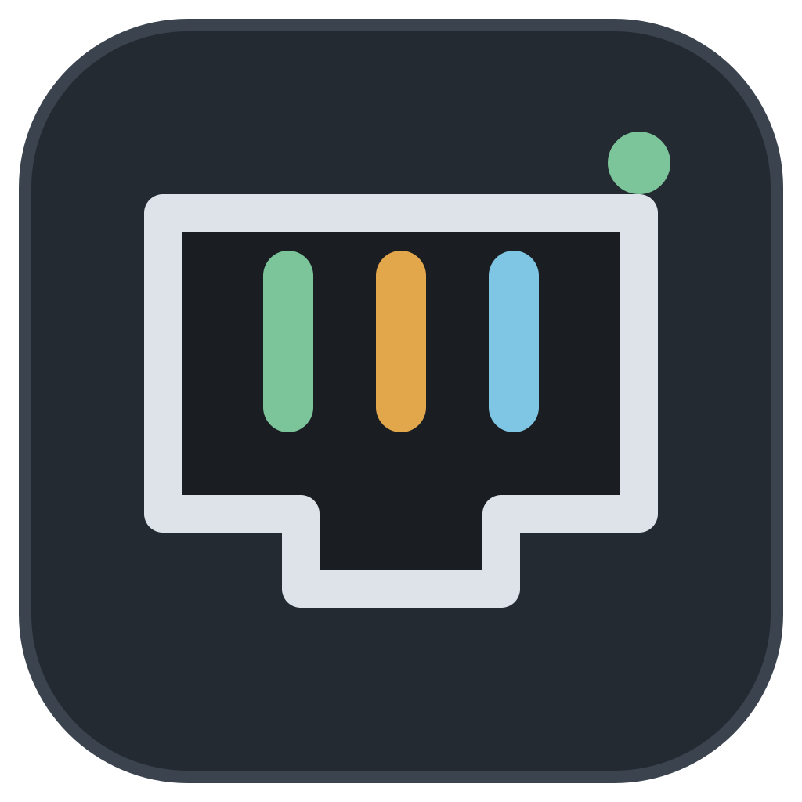
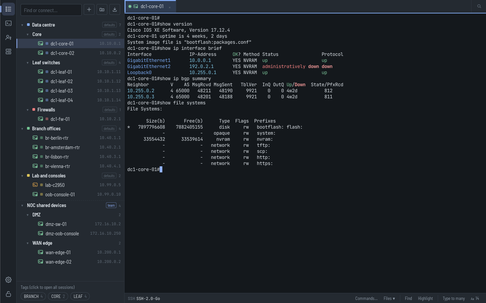
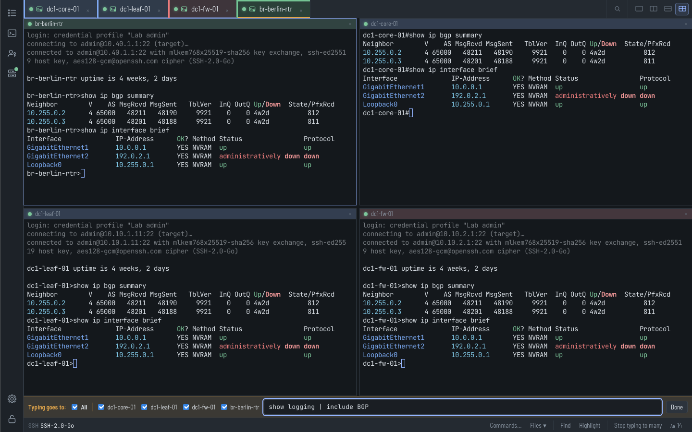
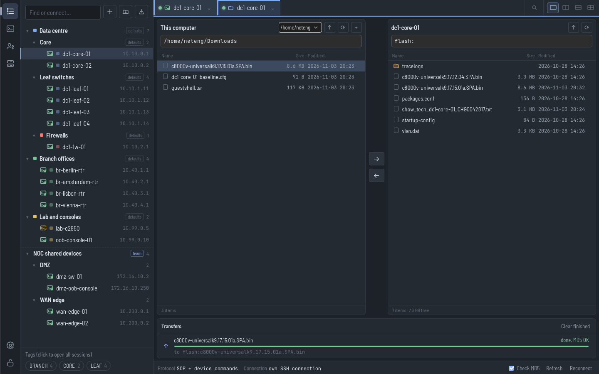
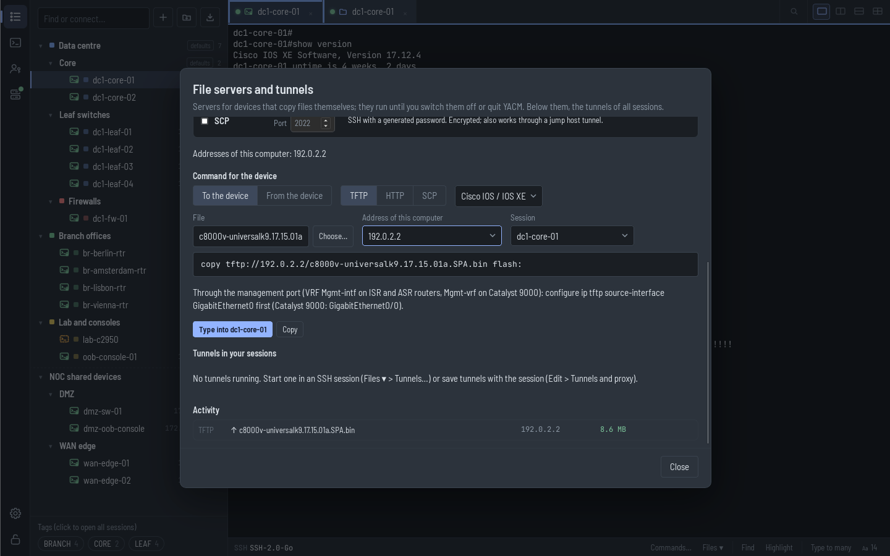
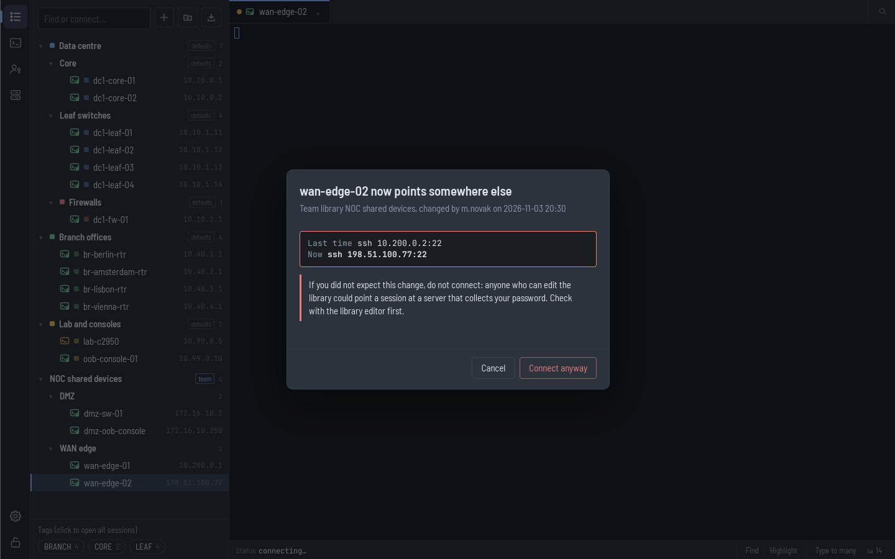

YACMYACM (Yet Another Connection Manager) keeps your SSH, telnet and serial sessions in one place, whether you look after ten devices or a team's thousands. For Windows, macOS and Linux.
Windows 10 and 11 · macOS 13 or newer · Linux · no installation, no account, no telemetry

The things that matter when many people share many devices.
Publish a group of sessions as one file on a share or in git. Colleagues see the same devices, read-only, and log in with their own accounts. Libraries never contain passwords.
One login for many sessions. When your directory password changes, change it once. Profiles also fill in telnet and serial logins.
A group gives its sessions a login, a jump host, an algorithm profile and colours. Move a site behind a new bastion by changing one group.
One field filters the tree and connects; Go to session ranks matches among thousands of sessions and remembers the ones you opened last.
SecureCRT, Xshell, MobaXterm, mRemoteNG, PuTTY, Ásbrú, ssh config, CSV and Excel lists, and NetBox. Saved passwords go into the vault.
Send the same commands to several sessions, keep a library of commands per vendor, and highlight errors and alerts in every session.
From post-quantum SSH to a console cable.
Modern and post-quantum algorithms by default, compatible and legacy profiles for older gear, keys, agents, .ppk files and certificates, host key checks on every hop.
For the devices that never learnt SSH, with login automation and telnet break.
Any baud rate and line setting, USB adapters by name, break for ROMMON and password recovery.
Chains of jump hosts with their own logins and MFA prompts, per session or for a whole group.
A Files tab for SFTP and SCP with MD5 checks, command output to a file through the session, and TFTP, HTTP and SCP servers with the copy command written for Cisco, Arista, Juniper and Linux.
Local, remote and dynamic port forwards, a SOCKS and HTTP proxy, and tunnels that bring the file servers to devices behind a jump host and to servers behind a VPN.
Real sessions against the YACM demo device.




Made for regulated networks: YACM helps you meet NIS2, ISO 27001 and PCI DSS. Security and compliance details
YACM is GPL-licensed and stays free. If you would like it to keep improving and getting new features, you can support its development.